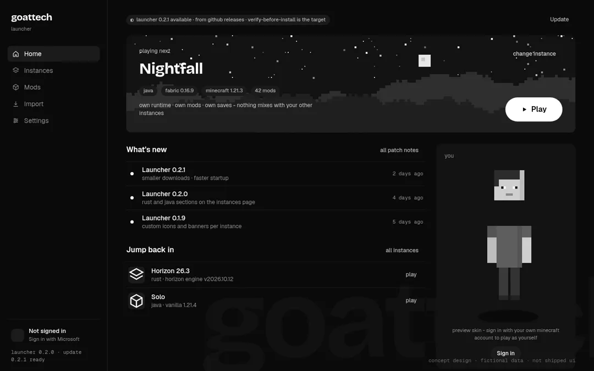
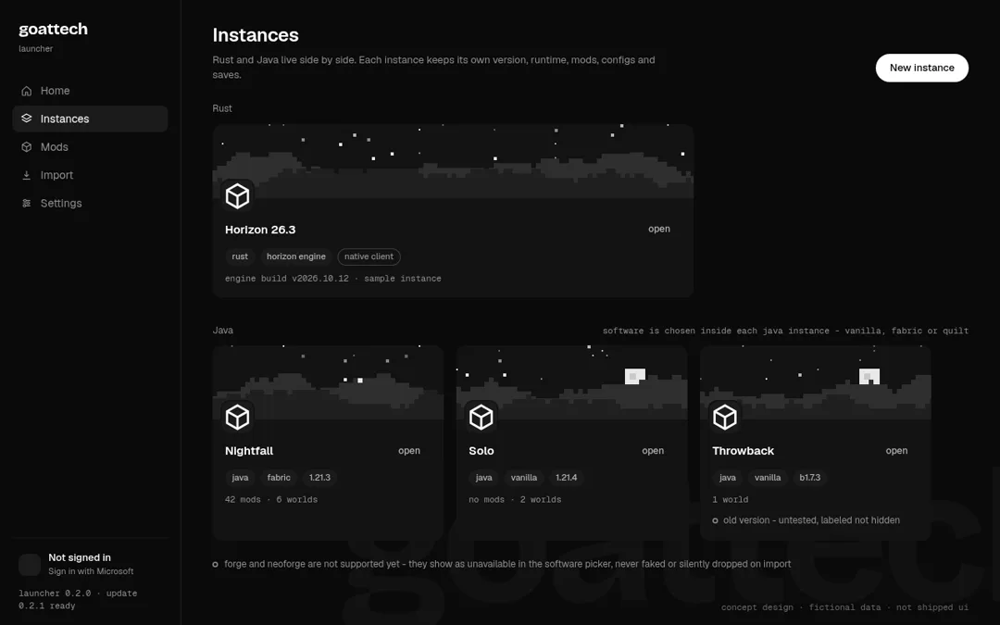
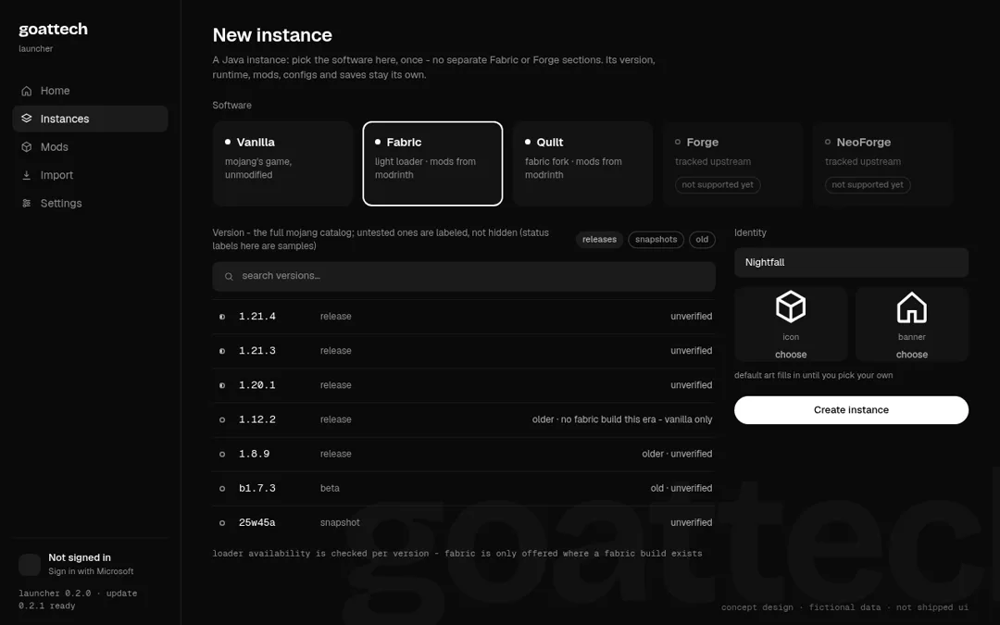
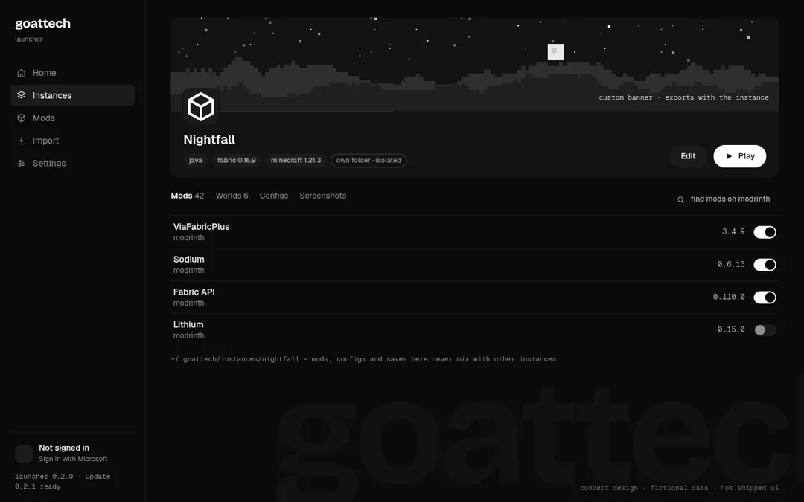
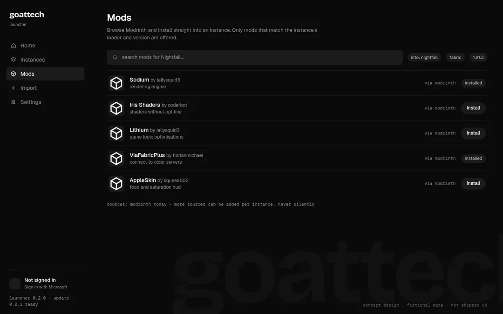
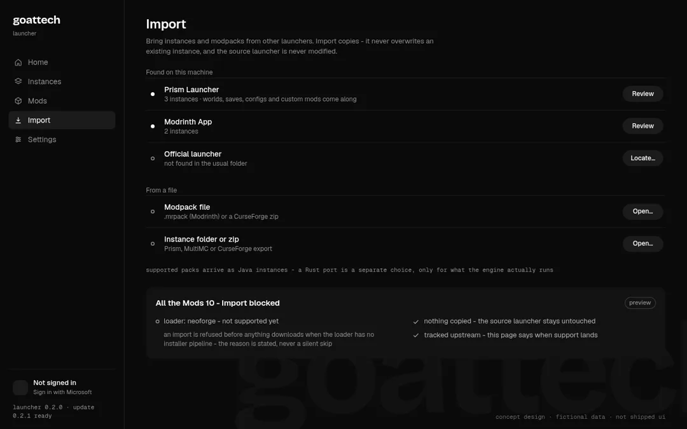
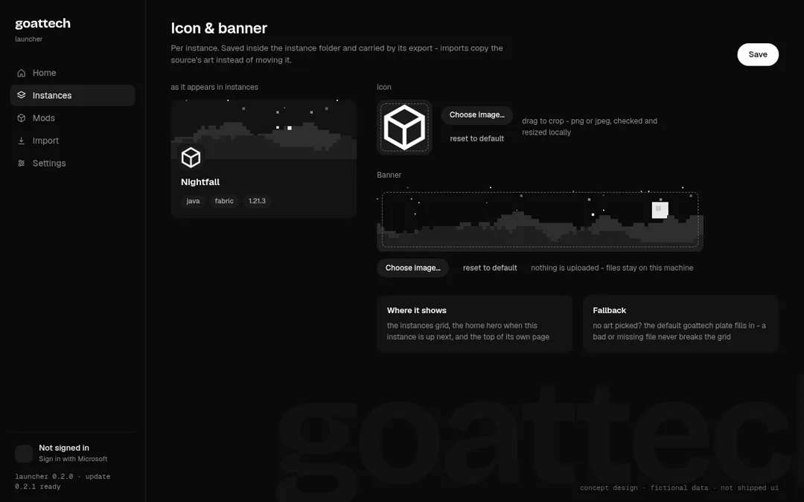
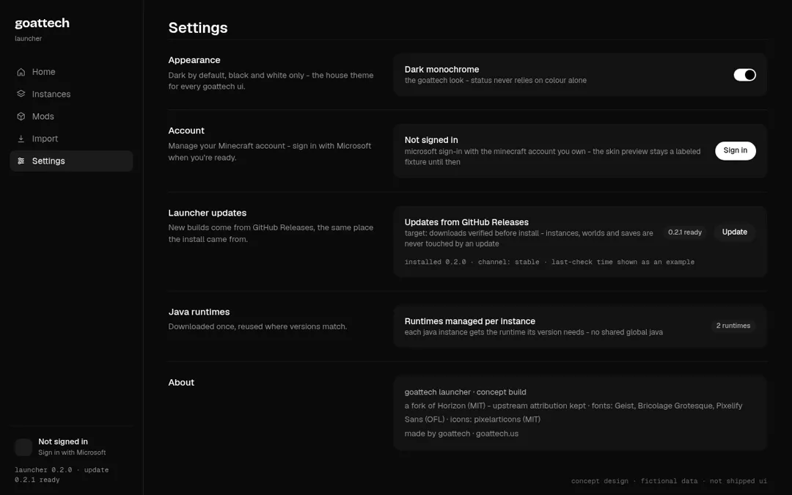

goattech launcher is a minecraft launcher built as a fork of horizon (mit). it puts the horizon rust engine and ordinary java instances in one home - fabric and quilt mods from modrinth, imports from the launchers you already have, and every instance keeping its own runtime, mods and saves.
most launchers only do java. horizon only does rust. this one keeps both in the same instances list - pick per instance, switch whenever.
the horizon client: minecraft java edition 26.3 rewritten in rust, checked against vanilla by upstream's differential harnesses. runs as its own instance type here.
vanilla, fabric or quilt - chosen once per instance, in the instance. no separate loader sections, no shared global java: each instance gets the runtime its version needs.
the rules the launcher plays by, copied from its own design notes.
no download button on this page, on purpose. here's the real state.
want it anyway? build from source: github.com/GoatTech-42/goattech-launcher · when real builds ship they'll be on github releases, verified before install.
concept designs for the app - fictional data, not shipped ui. the look is the launcher's own: black and white, dark by default, status you can read without colour.








goattech launcher is a fork of horizon (mit). the rust engine - the hard part - is upstream's work, and the fork keeps its attribution and stays in sync with it. what this fork adds is the other half: ordinary java instances with fabric, quilt, modrinth and imports, in the same home. not an official minecraft product; you need your own copy of minecraft: java edition.